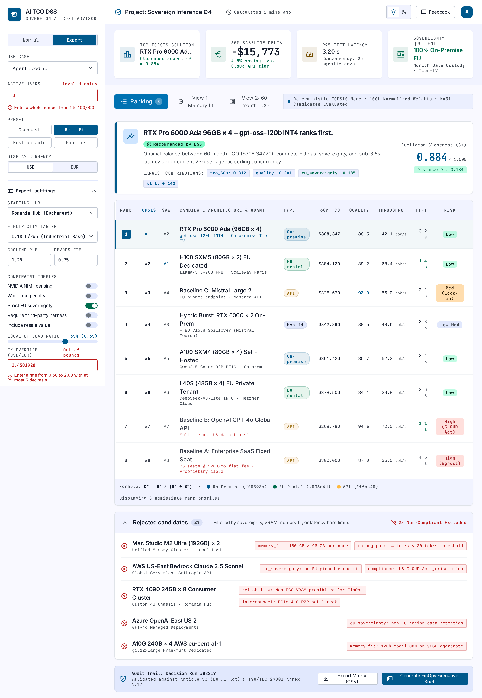
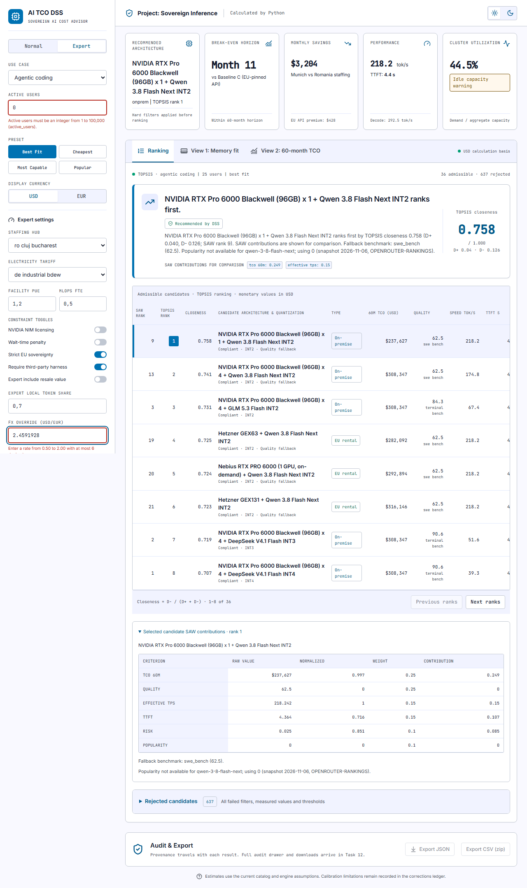
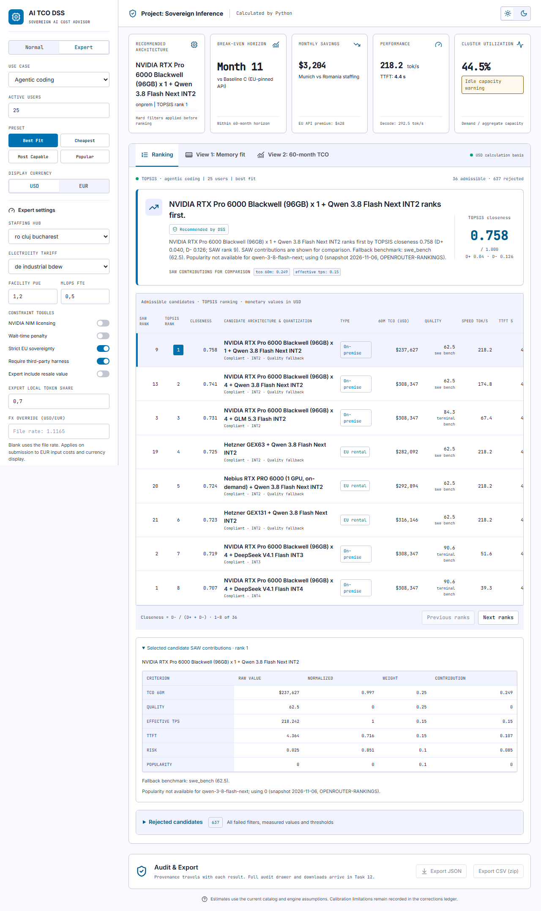
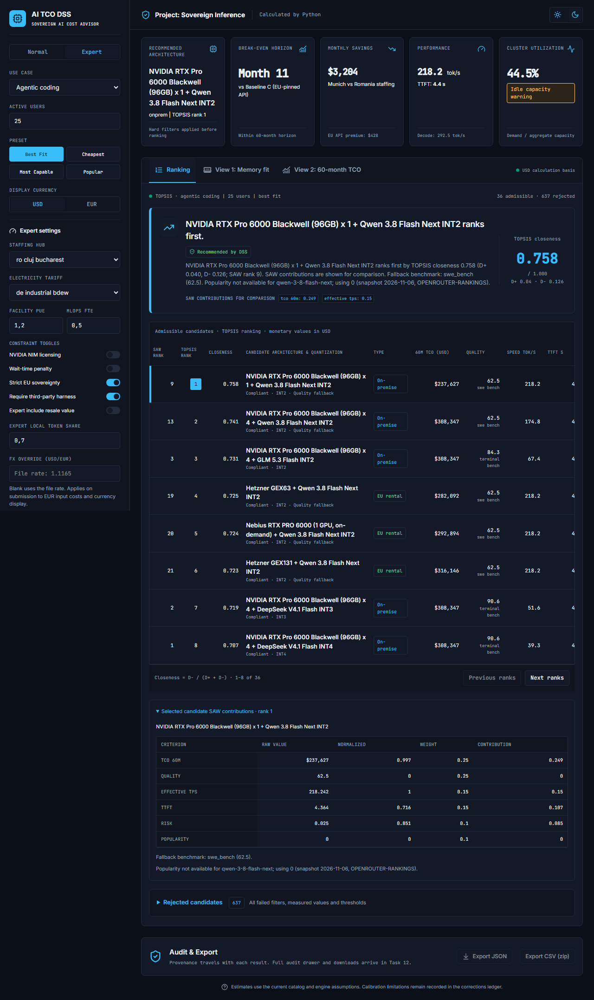

Canonical Stitch Expert validation

Implemented Expert validation

Implemented light TOPSIS

Implemented dark TOPSIS

2026-11-08 / Chromium DPR 1 / 1280 CSS px. Review and intentional differences.



